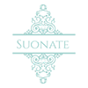

<ion-header [translucent]="true">
  <ion-toolbar>
    <ion-title class="titulo">
      <ion-grid>
        <ion-row>
          <ion-col size=2>
            
          </ion-col>
          <ion-col size=10  id="encabezado">

            <span>
              <ion-icon class="icono" name="home"></ion-icon> 
              <strong>  BOLSOS</strong>
            </span>

          </ion-col>
        </ion-row>
      </ion-grid>
      
    </ion-title>
  </ion-toolbar>
</ion-header>

<ion-content [fullscreen]="true">

  <div class="ion-padding">
    
      <h2 class="tLista"><strong>LISTA DE BOLSOS</strong></h2>
      <!--Creamos una variable llamada documentBolsos y va tomando
      el valor de todos los registros con el bucle, a partir del array de los bolsos-->
      <!--Añadimos que al hacer clic se ponga el bolso    seleccionado(obtenemos su id)-->
      <ion-grid>
        <ion-row>    
          
            <ion-col *ngFor="let documentBolsos of arrayColeccionBolsos" size-xl="3" size-lg="4" size-md="5" size-sm="6" size-s="7" size-xs="12">
            <ion-card class="card" (click)="selecBolso(documentBolsos)"> 
              <ion-card-content>

                <h3 id="tR" class="tR">   {{documentBolsos.data.Referencia}}</h3>

                <p class="tB">{{documentBolsos.data.Nombre}}</p>
                
              </ion-card-content>
            </ion-card> 
            </ion-col>
          
        </ion-row>
      </ion-grid>

  </div>

  <ion-fab  vertical="top" horizontal="end" slot="fixed">
    <ion-fab-button class="b1" (click)="showAutor()" color="warning"><ion-icon name="information-outline"></ion-icon></ion-fab-button>
  </ion-fab>

  <!-- Cuidado COMPONENTES INDIVIDUALES (COMO LAS CARDS, NO PUEDEN TENER CADA UNA SU PROPIO FAB-->
  <ion-fab  vertical="bottom" horizontal="end" slot="fixed">
    <ion-fab-button class="b1" (click)="clicBotonInsertar()" color="warning"><ion-icon name="bag-add"></ion-icon></ion-fab-button>
  </ion-fab>

</ion-content>

<!-- Footer without a border -->
<ion-footer class="ion-no-border">
  <button  class="colF"  (click)="navigateToHome()"><br>
    <ion-icon class="enlaceI" name="home"></ion-icon><span class="spF"> Home</span>
  </button>
  <button class="colF" (click)="navigateToDesc()"><br>
    <ion-icon class="enlaceI" name="information-circle-outline"></ion-icon><span class="spF"> Descripción</span>
  </button>
  <button class="colF" (click)="navigateToMap()"><br>
    <ion-icon class="enlaceI" name="locate-outline"></ion-icon><span class="spF"> Mapa</span>
  </button>
</ion-footer>


